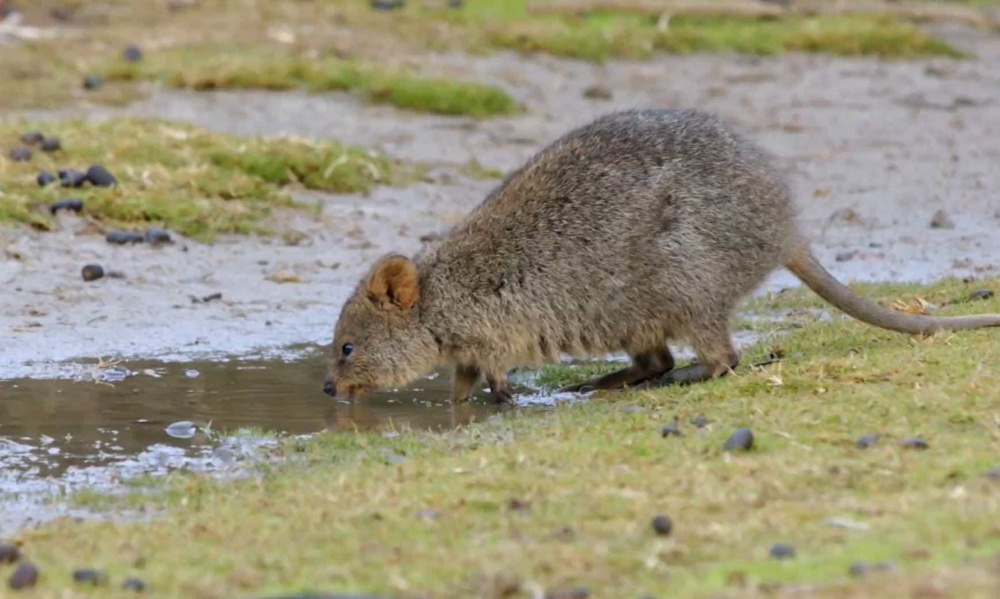

Diet of Quokkas
- The quokka is an herbivore.
- It eats a wide variety of vegetation, ranging from shrubs, leaves, and bark, to grasses.
- Its favorite is the guichenotia (a flowering bush).
- Quokkas drink water. They can extract most of the water they need from the plants they eat.
